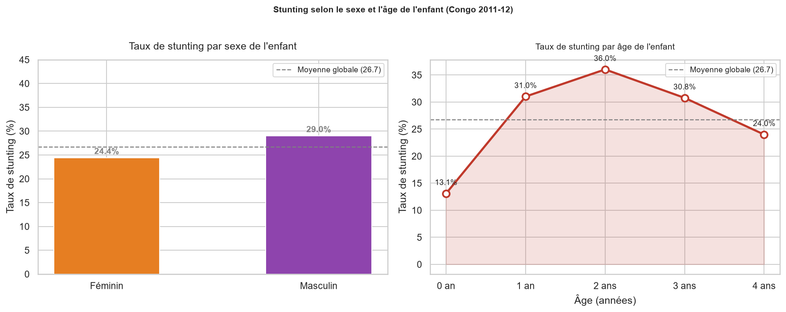
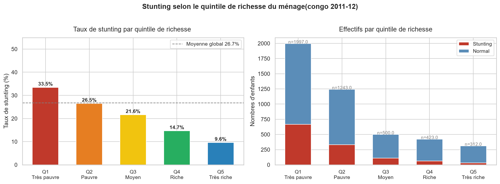
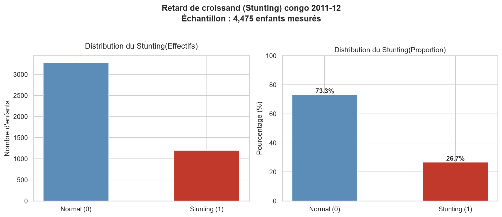
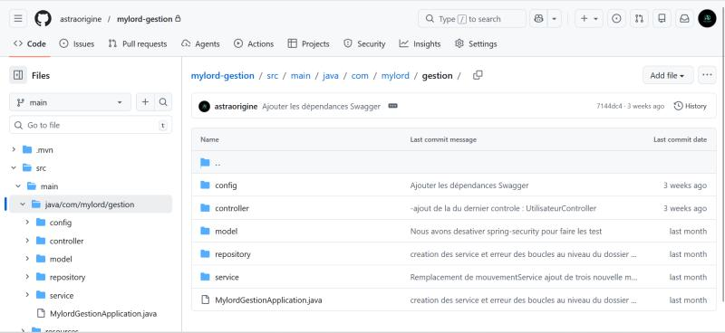
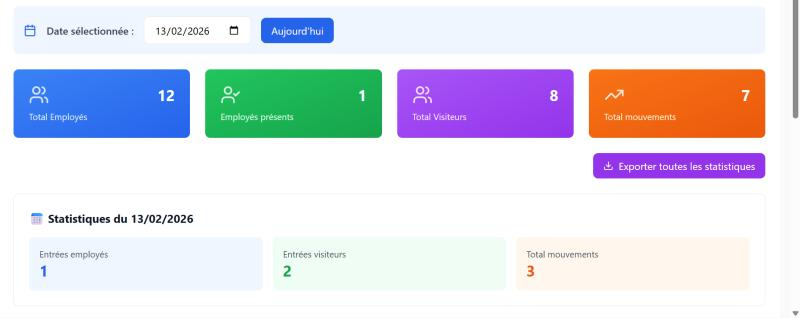
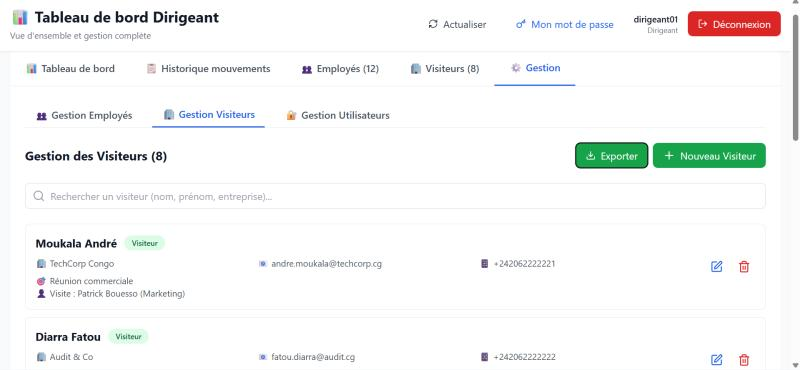
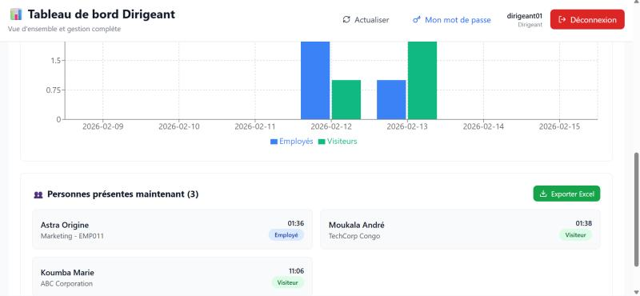
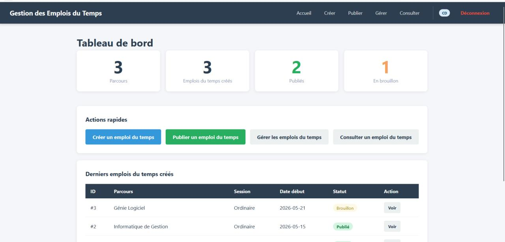
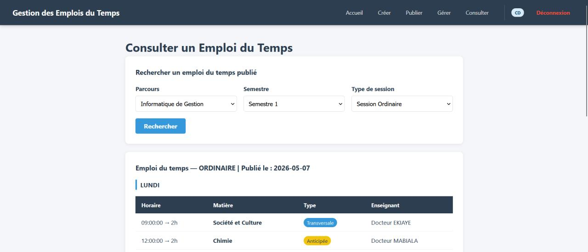

Cinq projets, cinq domaines.
Tous disponibles sur mon GitHub — code réel, pas des démos.
NutriPredict Congo
Ce projet est né d'une question simple : pourquoi certains enfants sont-ils davantage touchés par la malnutrition que d'autres ? À partir des microdonnées de l'Enquête Démographique et de Santé (DHS) du Congo, j'ai analysé 4 475 enfants afin d'identifier les principaux facteurs associés au retard de croissance (stunting). Pour y répondre, j'ai combiné une analyse exploratoire de sept facteurs socio-démographiques avec un modèle de classification supervisée capable d'estimer le risque de malnutrition à partir du profil d'un ménage. L'objectif est de montrer comment la data science peut aider à mieux cibler les populations les plus vulnérables et orienter les actions de santé publique.



MylordGestion — Backend
Développée pour répondre à un besoin concret d'entreprise, cette API REST sécurise et centralise la gestion des présences et des mouvements du personnel grâce à une architecture robuste.


MylordGestion — Frontend
Une interface pensée pour être simple à utiliser aussi bien par les gardiens que par les dirigeants, avec des statistiques en temps réel et une navigation fluide.



GEDT — Emplois du Temps
Une application conçue pour automatiser la création des emplois du temps universitaires tout en respectant les nombreuses contraintes rencontrées dans un établissement réel.


EduGraph
Une plateforme qui exploite les bases de données graphe afin de mieux représenter les relations entre compétences et proposer des recommandations personnalisées aux étudiants.